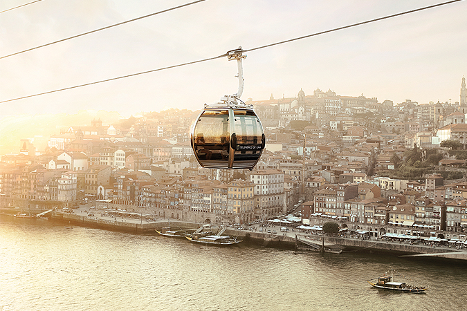
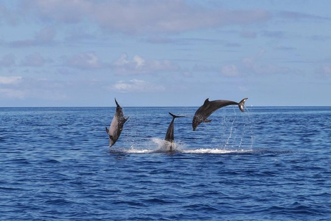

Teleférico do Porto
O teleférico liga a cota alta e baixa da cidade de Gaia, numa viagem de 6 minutos. O terminal à cota baixa está localizado no Cais de Gaia, na cota alta o terminal está implantado junto ao Jardim do Morro e à estação do Metro Jardim do Morro, posicionando-se também como meio de acesso para a visita ao Mosteiro da Serra do Pilar. Esta viagem proporciona uma vista magnífica do Porto, do rio Douro e das suas pontes e das caves do Vinho do Porto.

Sintra - Excursão particular em Cascais
Visite Sintra com o seu guia particular em uma excursão de um dia inteiro saindo de Lisboa. Veja monumentos, incluindo o Palácio Nacional da Pena e a Quinta da Regaleira — ambos Patrimônios Mundiais da UNESCO, o Castelo dos Mouros e o Palácio de Montserrate. Aprecie a paisagem das tradicionais cidades e do litoral de Sintra e almoce à beira-mar. Decida quais monumentos deseja visitar ou simplesmente veja os pontos de referência do lado de fora.

Observação de Baleias e Golfinhos nos Açores
É possível avistar baleias e golfinhos nas Ilhas Açores durante todo o ano, e um guia de biólogo marinho garantirá que você maximize suas chances. Navegue em um cruzeiro de 3 horas a partir de Angra do Heroísmo, desfrute de vistas espetaculares das praias e baías das ilhas.
